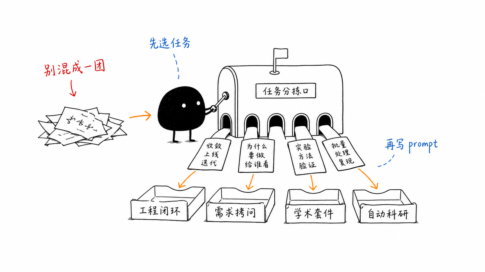
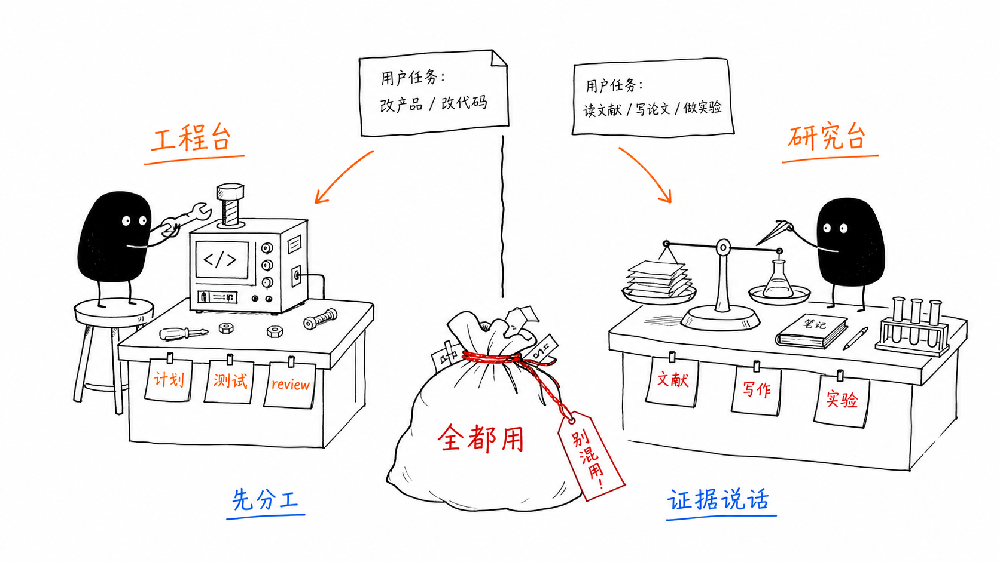
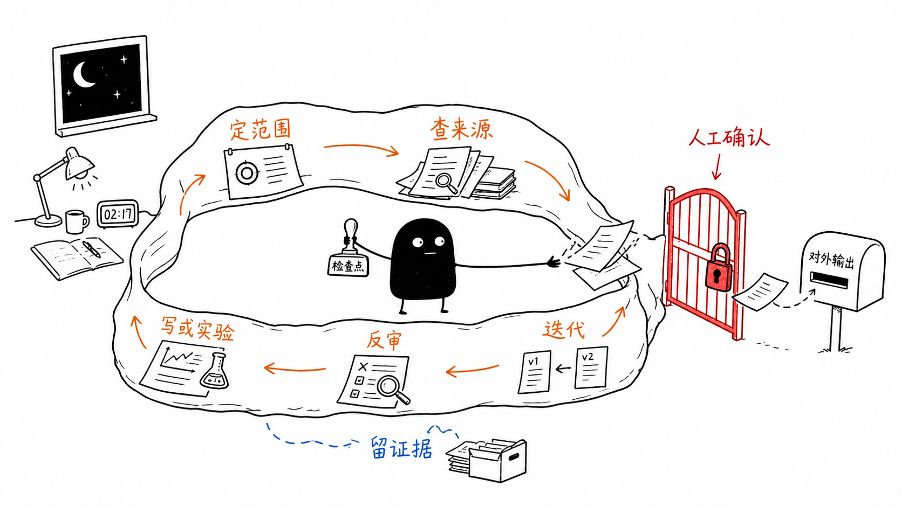

æ¯ä»ä¹
先按任务 fit 选仓库
不要把所有 skills 仓库一次性塞进同一个请求。普通 Codex Desktop 用户先回答三个问题：我要做工程交付、工程思考、学术工作，还是长时间研究自动化？然后只选一个主仓库，最多加一个辅助仓库。

éæ©å¨
30 秒选择表
mattpocock/skills要完整 brainstorm-plan-work-review 闭环时用 Compound；只想先拷问需求时用 Matt。mattpocock/skills辅助：Compound Engineering先用 /grill-with-docs 或 ask-matt 收紧语言，再进入重流程。academic-research-skills-codex辅助：ARIS想在 Codex 里用单个 suite 入口时选 ARS；需要更长流水线时再看 ARIS。academic-research-skills-codex长时间研究、自动评审、研究 wiki 和实验监控适合 ARIS；普通学术任务先选 ARS。mattpocock/skills辅助：Compound Engineering先让任务变清楚，再决定是否需要完整工程流水线。è¯æ®æ ç¾
先看案例证据等级
å·¥ç¨å·¥ä½æµ
Compound Engineering
EveryInc 的 Compound Engineering plugin 适合把工程任务组织成可复利的流程：brainstorm、plan、work、simplify、review、compound。它更像工程流程插件，不是一个单独的提示词集合。
能力
用 /ce-brainstorm、/ce-plan、/ce-work、/ce-simplify-code、/ce-code-review、/ce-compound 串起长任务。
最适合
多文件功能、复杂 bug、PR 前审查、长期维护同一仓库的工程知识。
安装路径
Codex Desktop 里添加 custom marketplace，Source 填 EveryInc/compound-engineering-plugin，ref 填 main，安装 compound-engineering 后重启。
[$compound-engineering:ce-brainstorm]
目标：把这个产品改动先讨论清楚。
仓库：当前 Codex Desktop 打开的仓库。
边界：只讨论需求、风险和验收，不改文件。
输出：给出 requirements-only 计划和下一步问题。- 使用边界需求还很粗时先 brainstorm；不要一行模糊目标直接交给
/lfg。 - 仓库链接（外部链接）github.com/EveryInc/compound-engineering-plugin
案例：从需求到 PR #1
本指南先确认单页范围与读者顺序，再在同一计划中补齐实施单元，通过 LFG 完成页面、图片、检查和 PR #1。重要恢复是收紧 staging，避免把忽略的过程记录带入公开提交。证据包括公开计划、提交、PR、make check 和默认分支合并；完整交付门禁见 团队协作规范。
å·¥ç¨çº¦æ
mattpocock/skills
mattpocock/skills 是一组小而可组合的工程 skills，强调 shared language、需求拷问、TDD、调试、架构改进和代码审查。它适合先把“我要做什么”问清楚，再决定是否进入更重的交付流程。
能力
/grill-with-docs、/grill-me、/tdd、/diagnosing-bugs、/improve-codebase-architecture、/code-review 等。
最适合
需求不稳、术语混乱、想先被高质量追问，或者想把工程任务拆成 PRD / issues。
启用路径
README 给出的路径是 npx skills@latest add mattpocock/skills，安装后运行 /setup-matt-pocock-skills 选择技能和项目偏好。
[$grill-with-docs]
仓库：当前 Codex Desktop 打开的仓库。
目标：我想做一个新的导出功能。
请先读 AGENTS.md、README 和相关源码，然后只追问会改变范围或验收的问题。
不要开始实现。- 使用边界它不是全自动大框架。先用 setup 选择需要的 skills，再按任务调用，不要一次加载全部。
- 仓库链接（外部链接）github.com/mattpocock/skills
案例：先建立上下文，再 grill
一次仓库任务先运行 setup 选择所需 skills，再读取 AGENTS.md、README、相关源码和 dirty 状态，只追问会改变范围或验收的问题。发现无关未提交文件后，明确把它们排除在写域之外，再形成计划。该证据只支持“上下文准备与需求澄清”，不声称自动完成实现、PR 或 merge。
å¦æ¯å¥ä»¶
academic-research-skills-codex
academic-research-skills-codex 是 Academic Research Skills 的 Codex-native sibling distribution。仓库名是 academic-research-skills-codex，Codex skill path 是 skills/academic-research-suite，页面里简称 ARS。

能力
一个 academic-research-suite 入口路由 deep research、paper writing、review、academic pipeline 和 experiment planning。
最适合
文献综述、新颖性检查、论文草稿、审稿意见模拟、实验计划和结果到 claim 的边界整理。
安装路径
按 README 用 skill-installer 指向 academic-research-skills-codex 仓库里的 skills/academic-research-suite。不要把 Claude Code 分发里的多个 skills 当成 Codex 安装路径。
[$academic-research-suite]
任务：为这个 AI/ML 论文想法做 deep research 和实验计划。
主题：[你的方法一句话]
边界：先输出研究问题、相关工作、可验证 novelty 和最小实验矩阵，不写论文正文。
证据：列出需要人工确认的来源和假设。- 使用边界安装后应该只有一个 ARS entry。不要把 Claude Code 分发里的多个独立 skills 当成 Codex-native 安装结果。
- 仓库链接（外部链接）github.com/Imbad0202/academic-research-skills-codex
场景：先做 novelty 与最小实验矩阵
输入一个方法想法和证据边界，让 suite 先返回研究问题、closest work、可证伪 novelty、最小实验与人工核验来源。来源不足或 baseline 不可复现时输出 blocked 研究回执，不进入论文正文。本项目没有该场景的执行记录，因此不标为历史案例。
èªä¸»ç 究
ARIS / auto-claude-code-research-in-sleep
ARIS 更像一套“睡眠式科研”的方法论和工具集合，而不是单个 Codex skill。它强调计划、资料收集、写作或实验、反向评审、迭代和持久化，适合已经有清晰研究目标和验证边界的高级用户。
能力
覆盖 idea discovery、literature、auto review loop、paper writing、experiment run、results analysis、experiment monitoring 等研究环节。
最适合
长时间研究流水线、自动审稿循环、实验监控、研究知识库和多轮论文改进。
启用路径
Codex 侧可参考仓库里的 tools/install_aris_codex.sh 和 tools/smart_update_codex.sh；主线说明仍以仓库 README 为准。
[$auto-review-loop]
目标：对我的论文方法和实验计划做一轮 adversarial review。
输入：当前草稿路径、实验日志路径、需要保护的 claim。
边界：只输出问题、证据缺口和下一轮实验建议；不要自动改论文或提交外部结果。- 使用边界长任务必须写清 objective、来源可信边界、验证证据和外部写操作审批。不要把“睡觉时自动科研”理解成无人监管。
- 仓库链接（外部链接）github.com/wanshuiyin/auto-claude-code-research-in-sleep
场景：夜间循环保留人工闸门
把已确认的研究 brief、预算、停止条件和输出目录交给长循环，每轮只生成日志、证据缺口和下一轮建议；修改论文、提交结果或启动高成本实验前必须等待人工授权。本项目没有该场景的执行记录，因此不标为历史案例。
è¿é¶
高级用户：按阶段组合，不要一锅端
组合这些仓库时，按阶段串联，而不是在一个 prompt 里同时要求所有 skills 工作。每一段都要有输入、停止条件和验证证据。

/ce-brainstorm、/ce-plan产物：范围、U-ID、验证合同。mattpocock/skills/grill-with-docs、/tdd、/code-review产物：更清楚的需求语言、测试思路、审查问题。academic-research-skills-codex$academic-research-suite产物：research brief、paper review、experiment plan。è¾¹ç
使用边界
- 非官方这些第三方 skills 仓库不是 OpenAI 官方功能。涉及 Codex Desktop 能力边界时，以 OpenAI 官方文档为准。
- 不写 star 数本页只说“高关注”或“高 stars”，不写具体数字；需要数字时应抓取 GitHub 数据并标日期。
- goal-entry 不列入
goal-entry是本机自己开发的 local adaptation，效果一般，只在 goal-entry 页面作为案例保留。 - 长任务要可验收高级自动化仍要写 objective、范围、验证、停止条件、外部写操作审批和人工 closeout。
çå®å®ä¾
真实实例：历史案例
输入
用户要求把 Compound Engineering、Matt Pocock skills、ARS 和 ARIS 放在一页，说明能力、使用方式和示例，并生成小黑配图。
先读
先读四个上游 README、本仓库页面模式、scripts/check_site.py 和 ian-xiaohei-illustrations 风格要求。
应动文件
skills-repositories.html、入口页、README.md、三张 figures/high-stars-*.png 和静态检查脚本。
验证
make check 检查 HTML、导航、锚点、文本和图片链接；再用 diff 检查是否误改全站顶栏。
最终回答
报告新增页面、图片路径、静态验证结果、未做 PDF 以及是否还有未提交改动。
失败停止
上游事实无法确认、图片无法保存、页面链接断裂、或实现必须把 goal-entry 放进高 stars 仓库列表。